URL은 리소스를, 이름은 한 가지 규칙으로
영상은 여덟 가지 습관을 하나씩 짚어요. 첫째와 둘째는 URL을 어떻게 지을지에 관한 거예요. 하나는 URL에 무엇을 담을지, 다른 하나는 이름을 어떻게 맞출지예요.
URL에는 동작이 아니라 리소스를
먼저 흔한 실수부터 보여 줘요. 아래 API 문서 화면에서 엔드포인트 이름의 주황색 부분을 보세요. get, create, delete가 URL 안에 들어가 있어요. 그런데 왼쪽 열의 메서드(GET, POST, DELETE)가 이미 같은 말을 하고 있어요.
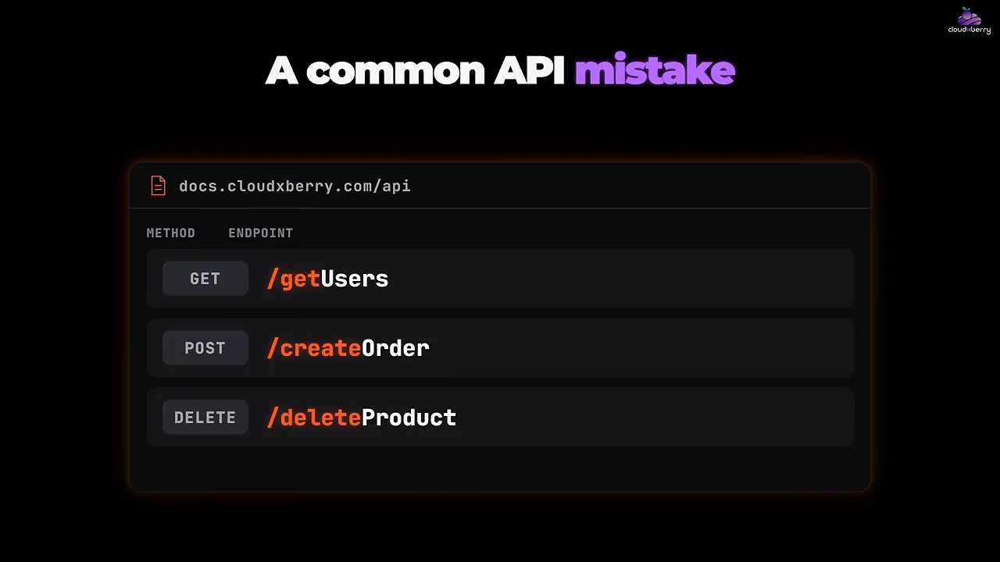
고친 설계는 표 한 장으로 정리돼요. 세로줄은 리소스(/users, /orders, /products), 가로줄은 메서드예요. 칸마다 'READ, CREATE, REMOVE'가 똑같이 반복되죠. 리소스가 늘어나도 메서드의 뜻은 그대로라서 새 이름을 지어낼 필요가 없어요.
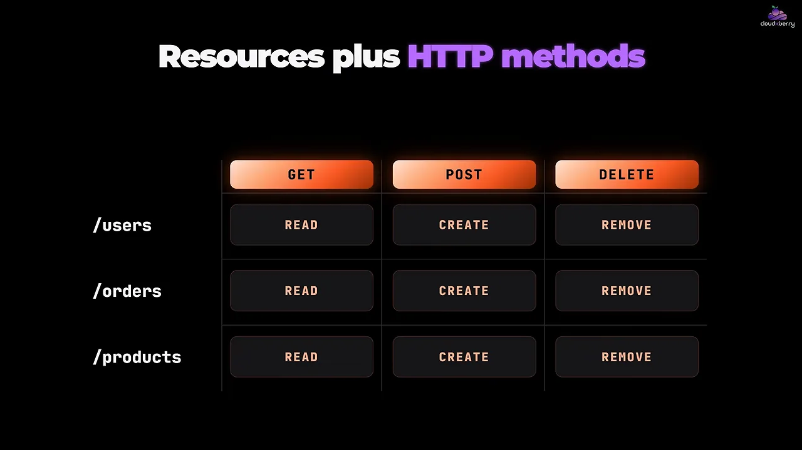
이 방식은 API가 커질수록 빛나요. 주문 하나(/orders/ord_7f3a91)에 GET, POST, PUT, DELETE를 바꿔 끼우기만 하면 조회, 교체, 삭제가 다 돼요. 오른쪽 상자는 그렇지 않았을 때의 모습이에요. 동작마다 /getOrder, /updateOrder, /deleteOrder, /cancelOrder를 따로 만들어야 해요.
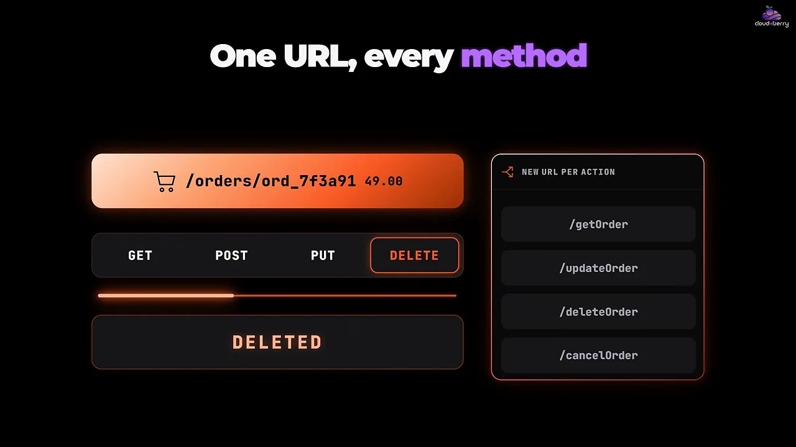
영상은 이 원칙을 한 문장으로 정리해요.
Let the URL identify the resource and let the HTTP method describe the operation.
URL은 리소스를 가리키고, 무엇을 할지는 HTTP 메서드가 말하게 하세요.
— 영상 00:32
이름은 하나의 규칙으로
두 번째 습관은 작아 보이지만 차이가 커요. 아래 화면에서 세 줄 모두 오른쪽에 'WORKS'가 붙어 있어요. /user/4821, /customers/4821, /customerProfiles/4821는 각각 돌아가요. 문제는 같은 대상을 세 가지 이름으로 부른다는 거예요. 이걸 쓰는 개발자는 어디서 어떤 이름을 쓰는지 외워야 해요.
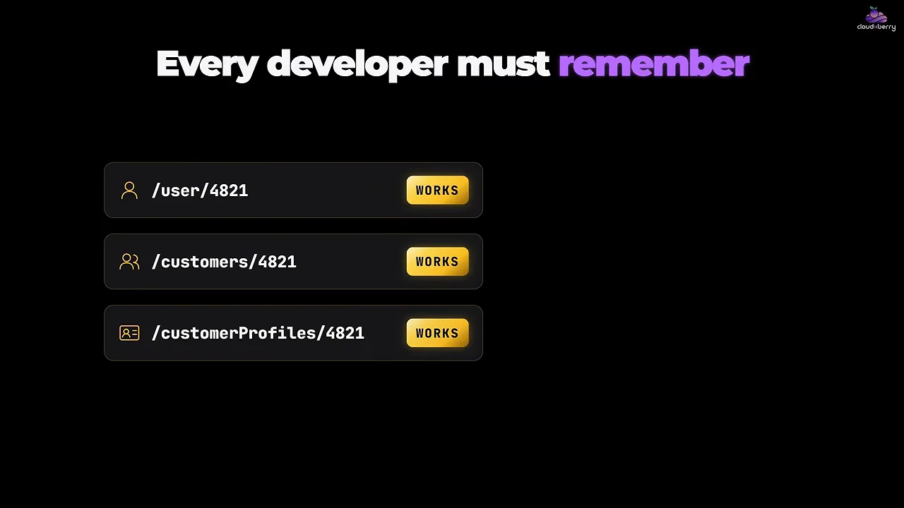
해법은 예측할 수 있는 구조예요. 컬렉션은 일관된 이름(/users, /orders, /products)으로 두고, 개별 리소스는 그 뒤에 식별자를 붙여요. 여러 단어로 된 이름은 규칙 하나를 골라요. 아래 화면은 order-items, order_items, orderItems 가운데 스네이크 케이스(snake_case)를 골랐을 때예요. 오른쪽처럼 /order_items/7f3a91/refunds까지 같은 모양으로 이어져요.
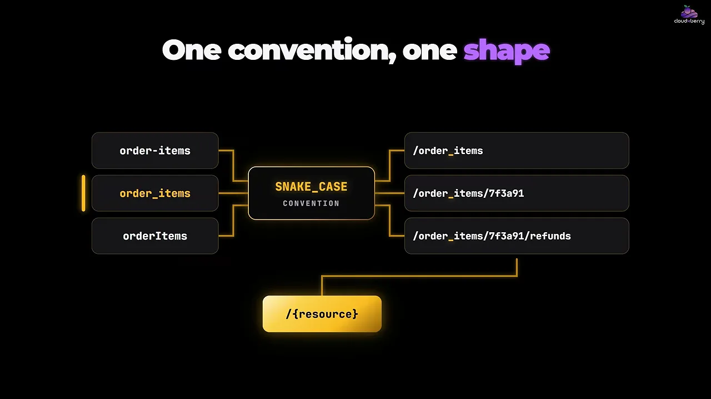
영상의 표현대로라면, 예측할 수 있는 API는 설명서가 덜 필요해요.
HTTP 메서드는 정해진 뜻대로
세 번째 습관은 메서드를 고르는 기준이에요. 사용자 정보를 고치는 일 하나를 두고 API마다 다른 메서드를 쓰는 장면에서 시작해요.
아래 화면 왼쪽 위의 세 칸을 보세요. API 하나는 POST, 하나는 PUT, 하나는 PATCH로 같은 일을 해요. 그 아래 숫자 3은 클라이언트가 배워야 할 규칙 수예요. 셋 다 기술적으로는 돌아가요. 하지만 클라이언트는 표준 HTTP 의미에 기대지 못하고 API마다 따로 익혀야 해요.
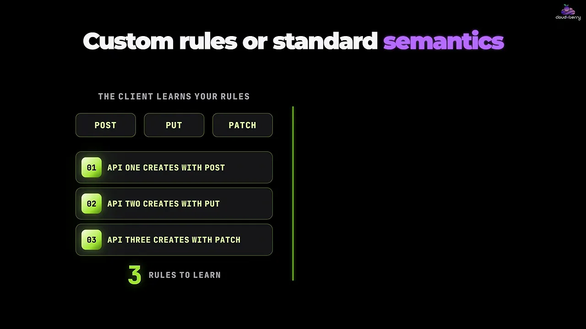
메서드마다 정해진 뜻
영상이 정리한 다섯 메서드의 용도예요. 슬라이드는 sarah.miller라는 사용자 레코드 하나로 차례차례 보여 줘요.
| 메서드 | 하는 일 | 영상의 예 |
|---|---|---|
| GET | 리소스를 바꾸지 않고 읽어요 | GET을 7번 보내도 바뀐 필드는 0개 |
| POST | 새 리소스를 만들거나, 단순 수정에 맞지 않는 처리를 시작해요 | /users에 4824번 새 레코드, POST /orders/7f3a91/refunds |
| PUT | 리소스의 표현을 통째로 교체해요 | PUT /users/4821로 세 필드 모두 교체 |
| PATCH | 일부만 고쳐요 | plan 필드 하나만 수정 |
| DELETE | 리소스를 지워요 | 레코드 전체 삭제 |
PUT과 PATCH의 차이는 아래 화면에서 잘 보여요. 왼쪽 PATCH 카드는 plan 한 줄만 테두리로 강조돼 있어요. 오른쪽 DELETE 카드는 모든 필드가 흐려지며 사라지고 있어요.
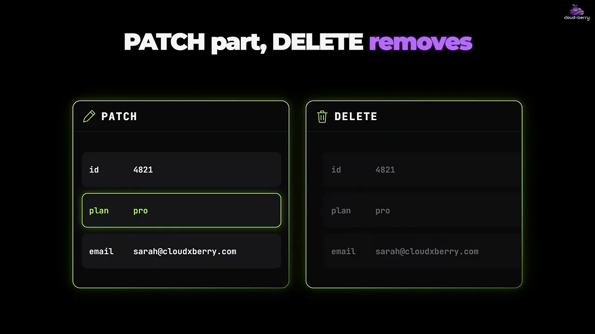
멱등성: 다시 보내도 괜찮은가
여기서 영상이 강조하는 개념이 멱등성이에요. 아래 화면 왼쪽 'ACCESS LOG'에는 GET /users/4821이 다섯 줄 찍혀 있어요. 오른쪽 숫자를 보면 로그는 5줄인데 레코드에 생긴 변화는 0이에요. 같은 GET을 다섯 번 보내도 한 번 보낸 것과 효과가 같다는 뜻이에요.
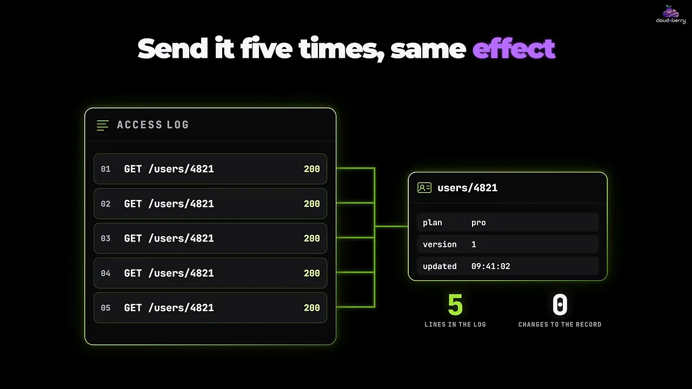
PUT과 DELETE도 같은 성질이에요. 아래 'REQUEST LOG'를 보면 PUT /users/4821을 두 번 보내도 결과는 'plan enterprise' 하나예요. DELETE를 두 번 보내도 결과는 'record gone' 하나고요.
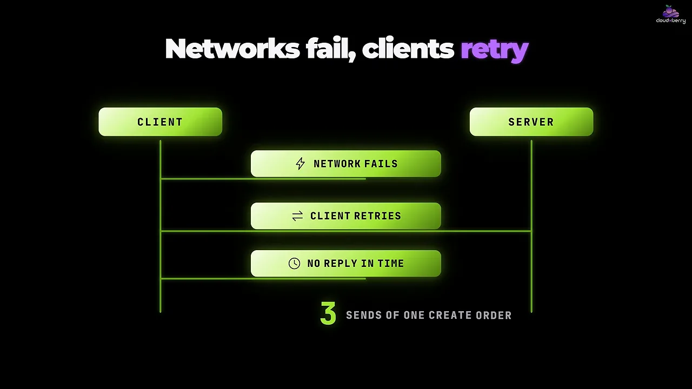
POST는 달라요. 아래 화면에서 같은 POST /orders 요청(상품 prd_2048, 49)이 두 번 들어가자 'ORDERS' 표에 ord_7f3a91과 ord_7f3a92 두 건이 생겼어요. 맨 아래 'CHARGED'는 98, 즉 두 번 결제됐어요.
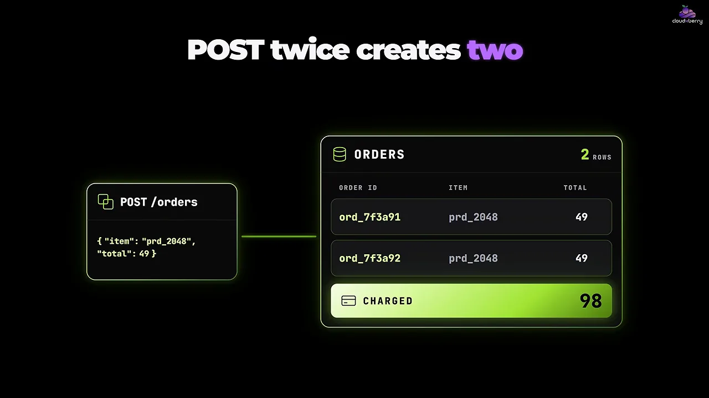
이게 왜 중요한지는 다음 장면이 보여 줘요. 클라이언트와 서버 사이에서 'NETWORK FAILS, CLIENT RETRIES, NO REPLY IN TIME'이 차례로 일어나고, 아래에 '주문 생성 한 번에 요청 3번'이라고 적혀 있어요. 네트워크는 실패하고 클라이언트는 재시도해요. 그래서 요청이 반복돼도 예측대로 동작해야 해요.
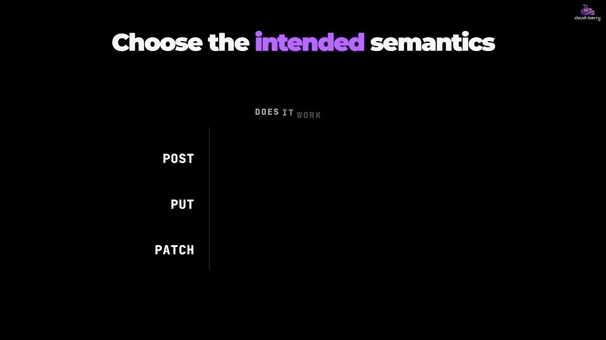
상태 코드와 오류 응답
네 번째와 다섯 번째 습관은 응답에 관한 거예요. 하나는 상태 코드, 다른 하나는 오류 본문의 모양이에요.
200을 주면서 실패라고 말하지 않기
영상이 꼽은 문제 응답이에요. 아래 화면에서 GET /products/2048의 상태는 초록색 200 OK예요. 그런데 본문은 상품을 찾지 못해 실패했다고 말해요. 상태 줄은 성공, 본문은 실패라서 클라이언트는 무슨 일이 일어났는지 알려면 두 군데를 다 봐야 해요.
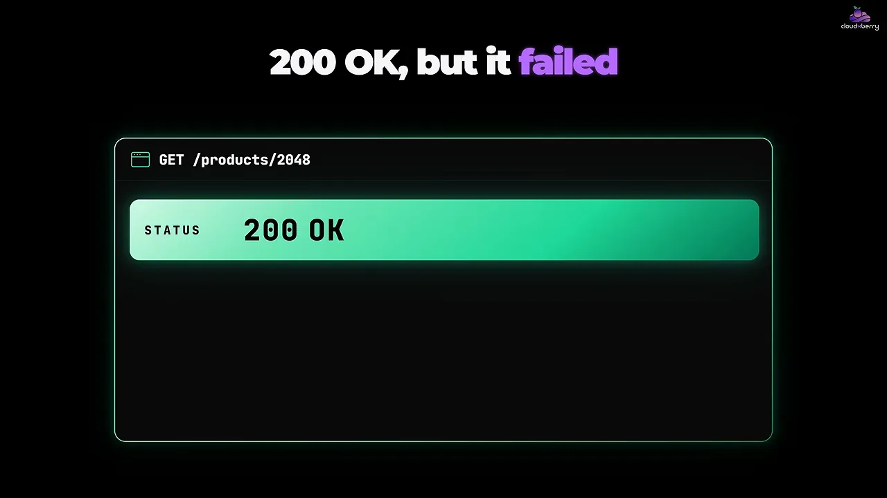
큰 결과는 상태 코드가 먼저 말하게 해요. 성공에도 종류가 있어요. 아래 터미널 화면은 curl -X GET /products/2048이 200(읽기 성공)을 받는 장면이에요. 이어서 curl -X POST /products를 보내 201을 받는 장면으로 넘어가요.
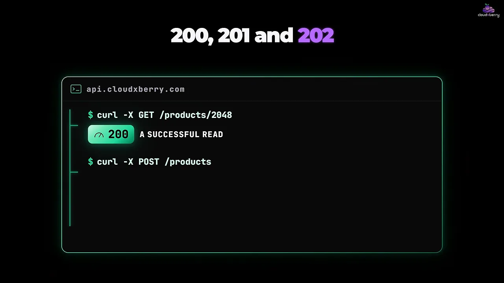
실패 쪽은 슬라이드 한 장에 일곱 개가 쌓여요. 아래 화면 왼쪽 빨간 코드와 오른쪽 설명을 짝지어 보면 돼요.
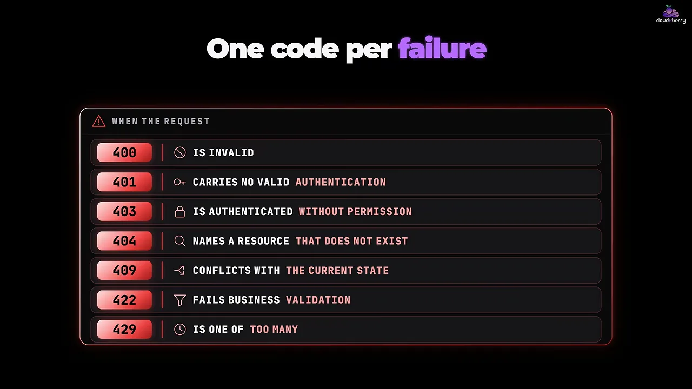
영상에 나온 코드를 한곳에 모으면 이래요.
| 코드 | 언제 쓰나요 |
|---|---|
| 200 | 읽기 성공 |
| 201 | 리소스를 새로 만들었을 때 |
| 202 | 요청은 받았고, 처리는 비동기로 나중에 끝날 때 |
| 204 | 성공했지만 돌려줄 본문이 없을 때 |
| 400 | 요청 자체가 잘못됐을 때 |
| 401 | 인증이 없거나 유효하지 않을 때 |
| 403 | 인증은 됐지만 권한이 없을 때 |
| 404 | 요청한 리소스가 없을 때 |
| 409 | 리소스의 현재 상태와 충돌할 때 |
| 422 | 비즈니스 검증에 실패했을 때 |
| 429 | 클라이언트가 요청을 너무 많이 보낼 때 |
영상은 이 코드를 다 외우라는 게 아니라고 해요. HTTP 위에 자기만의 오류 규약을 또 얹지 말고, 상태 코드로 무슨 일이 있었는지 알려 주라는 거예요.
오류 본문은 구조화하고, 모양을 맞추기
상태 코드는 실패의 종류만 알려 줘요. 클라이언트는 보통 더 많은 정보가 필요해요. 아래 화면 위쪽 상자는 클라이언트가 실제로 받는 "error": "something went wrong"이에요. 아래쪽 상자는 받을 수도 있었던 응답으로, "code": "PRODUCT_NOT_FOUND"와 "message": "No product with id 2048"가 들어 있어요. 오른쪽 숫자 2는 클라이언트가 활용할 수 있는 필드 수예요.
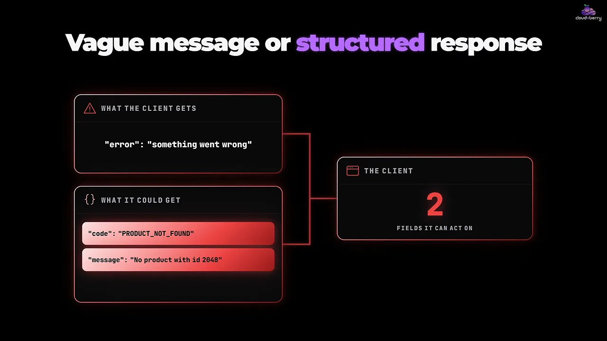
검증 실패라면 '잘못된 요청'이라고만 하지 말고 어느 필드가 문제인지 알려 줘요. 아래 POST /products 예에서 빨간 테두리로 짚은 건 price가 -12.00인 줄이에요. 이름(Wireless Keyboard)과 재고(40)는 문제가 없어요.
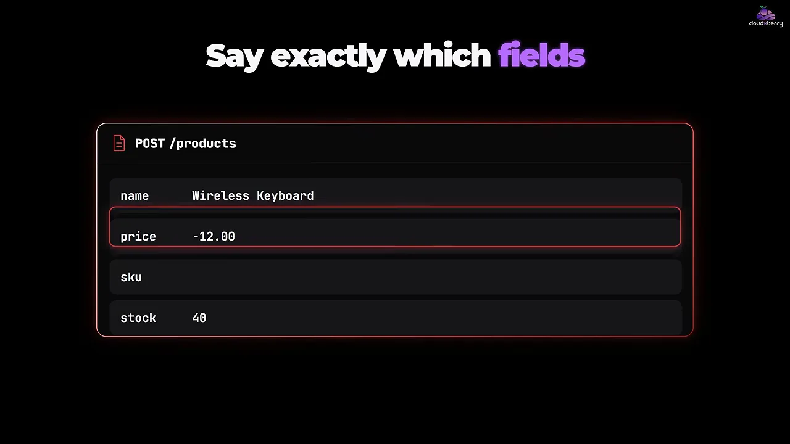
정확한 형식은 시스템마다 달라도 괜찮다고 해요. 아래 화면에서 'SYSTEM A'는 code, message, status를 쓰고, 'SYSTEM B'는 error_code, detail, http_status를 써요. 이름은 달라도 담는 정보는 같아요. 중요한 건 한 API 안에서 오류가 늘 같은 모양으로 나오는 거예요.
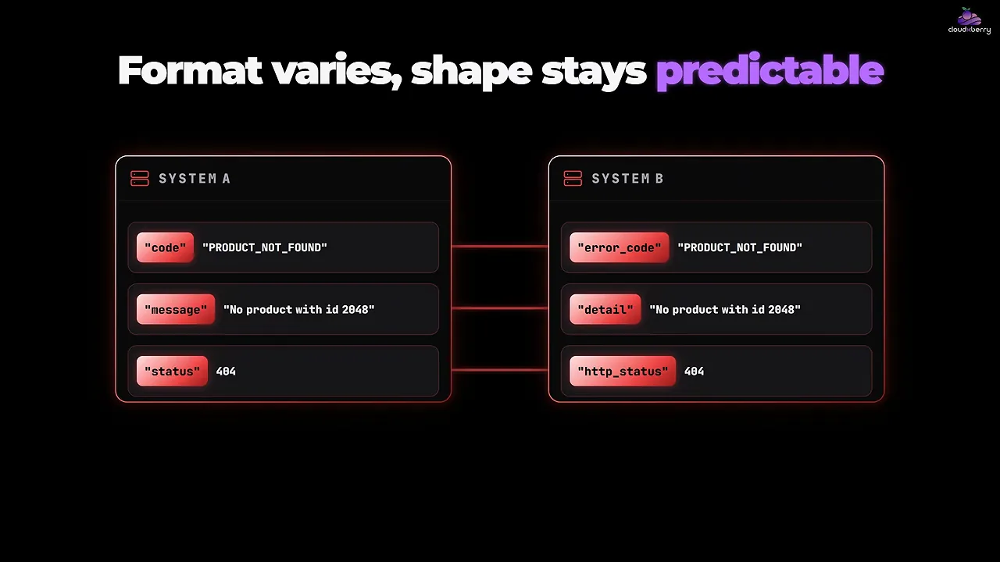
경로와 쿼리 파라미터의 역할 나누기
여섯 번째 습관은 URL의 경로와 쿼리 파라미터에 각자 맡은 일을 주는 거예요.
상품 목록에서 시작해 카테고리, 재고 여부, 가격, 검색, 정렬을 하나씩 경로에 붙여 가면 어떻게 될까요. 아래 화면처럼 /products/keyboards/in-stock/under-50/search/sort-by-price가 돼요. 조건을 하나 더하거나 순서를 바꿀 때마다 경로 규칙이 흔들려요.
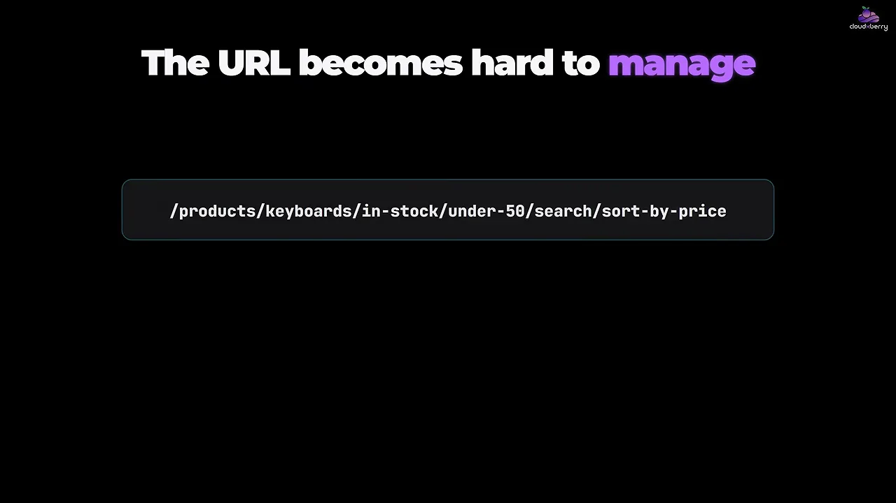
걸러 내는 조건과 선택 조건은 쿼리 파라미터가 더 잘 맞아요. 아래 화면에서 경로는 맨 아래 /products 하나로 남아요. 위쪽 네 칸(카테고리 keyboards, 재고 있음 true, 최고 가격 50, 정렬 기준 price)이 그 결과를 다듬는 조건이에요.
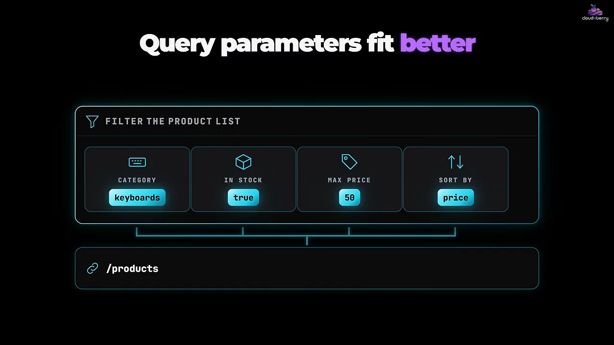
쿼리로 동작을 지어내지 않기
반대 방향의 실수도 있어요. 아래 화면의 GET /products/2048?action=delete를 보세요. 왼쪽 상자에서 메서드는 'READ'라고 말하고, 오른쪽 상자에서 쿼리는 DELETE라고 말해요. 아래 숫자는 요청 하나(1)에 서로 다른 동작 두 개(2)가 담겼다는 뜻이에요. 이렇게 되면 메서드만 봐서는 무슨 일이 일어날지 알 수 없어요.
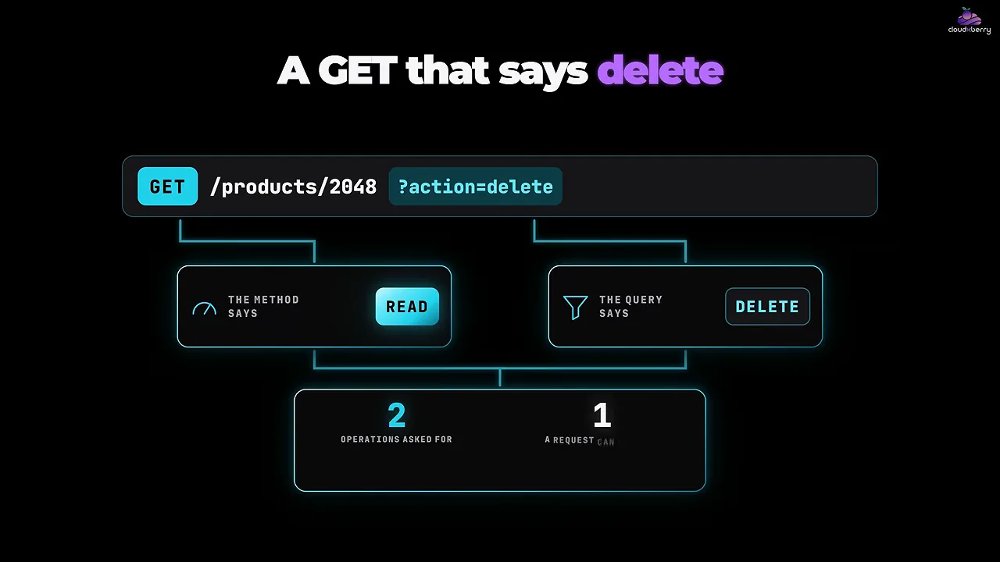
영상은 역할을 세 줄로 나눠 마무리해요. 아래 화면에서 GET /products/2048?fields=price의 세 조각이 각각 한 줄에 대응해요.
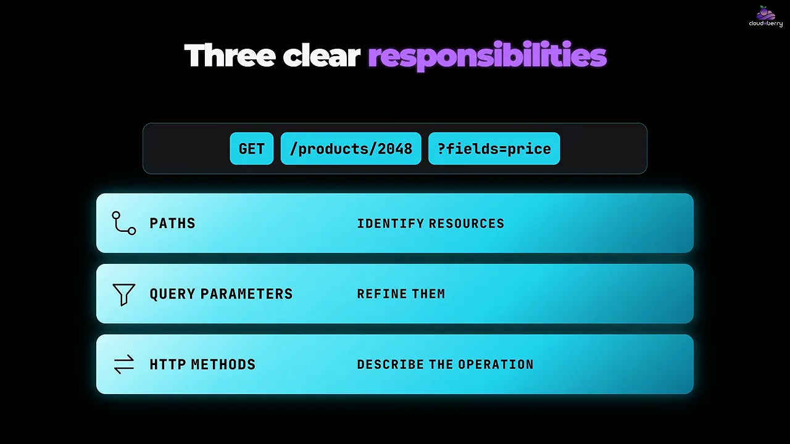
API를 바꿀 때 기존 클라이언트 지키기
일곱 번째 습관은 API를 바꿀 때의 태도예요. 오늘 완벽해 보이는 응답도 여섯 달 뒤엔 바뀌어야 할 수 있어요. 위험한 건 기존 클라이언트를 생각하지 않고 깨지는 변경, 즉 브레이킹 체인지를 내보내는 거예요.
바꾸는 방식은 세 가지
영상은 변경을 세 종류로 나눠요. 아래 화면의 세 카드는 모두 "price": 49.00에서 출발해요. 첫째 카드는 "currency": "USD" 필드를 더하고, 둘째는 price를 { "amount": 49.00 } 객체로 바꾸고, 셋째는 같은 필드가 이제 세금을 뺀 값(now excludes tax)이라는 뜻으로 바뀌어요.
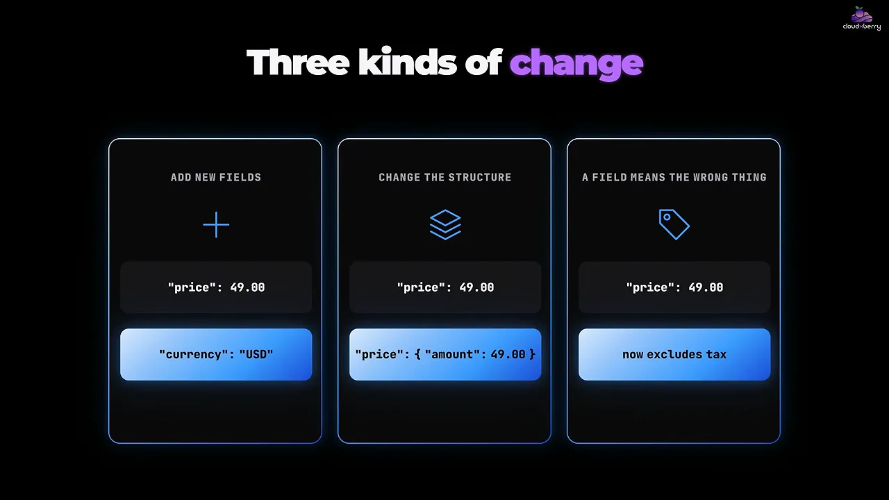
구조 변경을 자세히 보여 주는 예예요. 아래 화면 왼쪽 v1은 "price": 49.00 한 줄이에요. 오른쪽 v2는 "pricing" 객체 안에 amount, currency, tax를 담아요. 오른쪽 위 '5 lines added'처럼 필드 하나가 구조 하나가 됐어요.
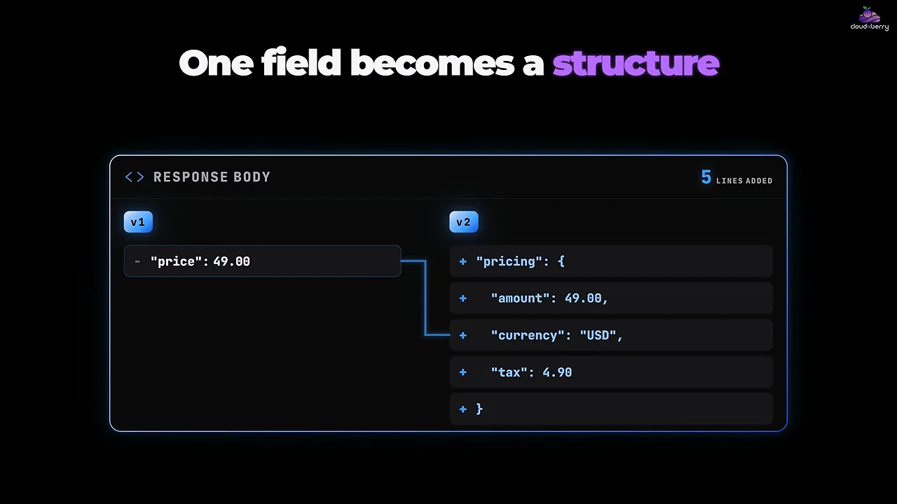
그러면 기존 클라이언트에 무슨 일이 생길까요. 아래 화면에서 클라이언트는 response.price를 읽어요. v1 줄은 49.00에 닿지만, v2 줄은 price가 없어 금지 표시에서 끊겨요. 오른쪽 '1 of 2 lanes resolve'가 그 결과예요.
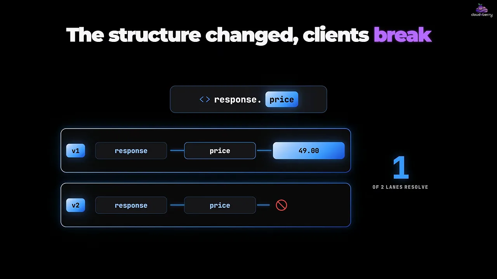
그래서 먼저 정말 새 버전이 필요한지 물어요. 필수가 아닌 필드를 더하는 건 보통 기존 클라이언트를 깨지 않아요. 기존 동작을 바꾸거나 없애는 건 깰 수 있어요.
버전이 필요하다면
방식은 분명하고 한결같아야 해요. 아래 화면은 두 가지 예를 보여 줘요. 위는 URL에 버전을 넣는 GET /v2/products/2048, 아래는 요청 헤더에 넣는 Accept: application/vnd.cxb.v2+json이에요.
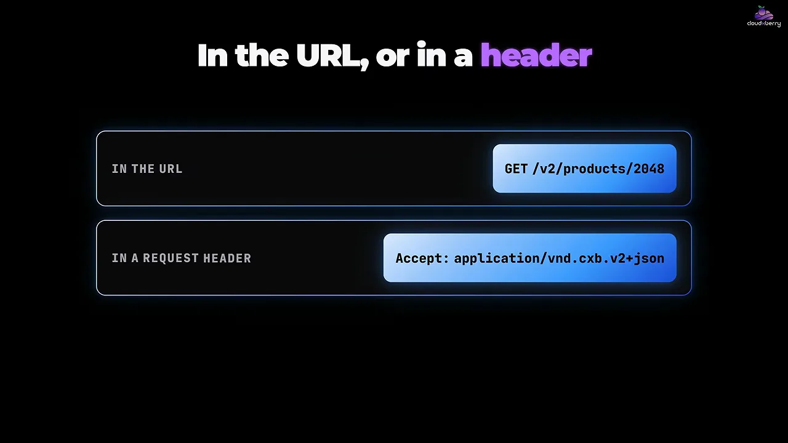
방식만큼 중요한 게 이전 경로예요. 아래 'MIGRATION PLAN'은 세 날짜로 짜여 있어요. 2026-09-01에 v2를 열고(준비되면 옮기세요), 2027-03-01에 v1을 지원 중단으로 표시하고(모든 응답에 경고), 2027-09-01에 v1을 없애요.
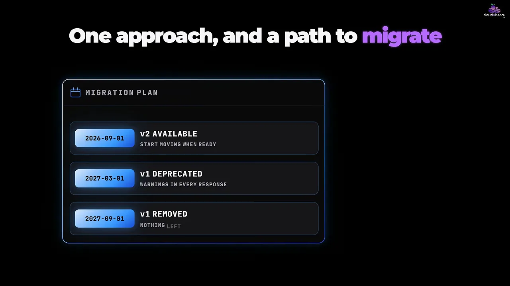
그 결과가 다음 화면이에요. v2를 내보낸 뒤에도 web-checkout, mobile-app, billing-worker는 v1으로 그대로 돌아가고('STILL WORKING'), partner-sync와 analytics-etl은 v2로 옮겼어요('MIGRATED'). 맨 아래 숫자는 여전히 서비스되는 클라이언트 5개, 변경 때문에 깨진 클라이언트 0개예요.
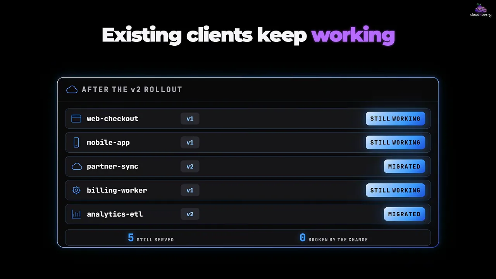
형식을 맞추고, 패턴부터 정해요
여덟 번째 습관은 요청과 응답의 형식을 맞추는 거예요. 영상은 개발자들이 이걸 과소평가한다고 말해요.
같은 필드, 세 가지 표기
아래 화면 왼쪽 'NETWORK' 상자를 보세요. 같은 생성 시각을 GET /users/4821은 "createdAt", GET /orders/7f3a91은 "CreatedAt", GET /products/2048은 "created_at"으로 돌려줘요. 오른쪽 클라이언트는 createdAt만 알고 있어서 세 응답 중 하나(1)만 읽을 수 있어요.
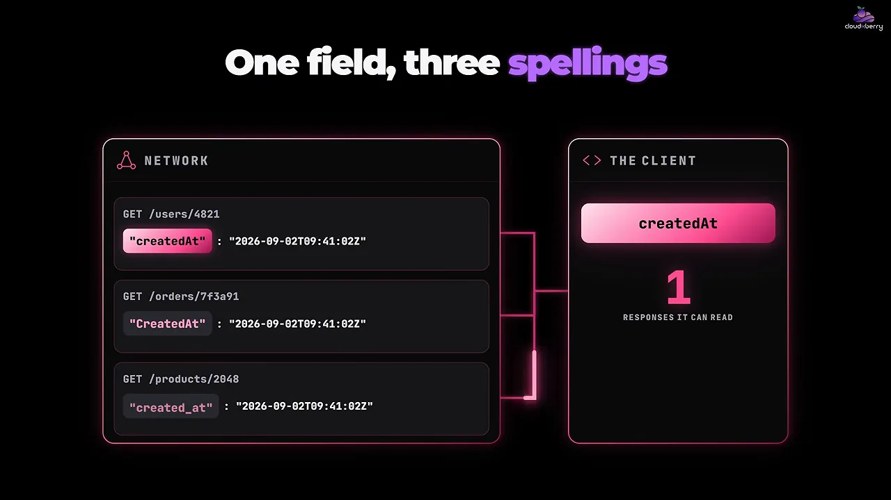
그러면 클라이언트 코드에 if (url.startsWith("/users")) key = "createdAt" 같은 분기가 엔드포인트마다 생겨요. 같은 문제는 이름에서 끝나지 않아요. 아래 'CONSISTENCY AUDIT' 화면은 날짜(2026-09-02와 02/09/2026), 페이지네이션(page와 offset), 오류 응답(code와 error_code), 속성 이름까지 네 곳에서 표기가 갈린 걸 보여 줘요.
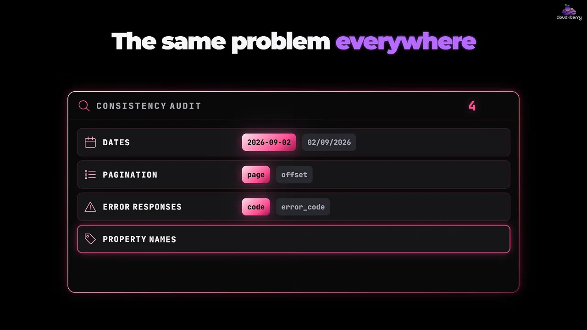
해법은 규칙을 정하고 지키는 거예요. 아래 'OUR CONVENTIONS' 화면의 오른쪽 분홍 칸이 영상이 든 예시 규칙이에요. 형식은 어디서나 JSON(JavaScript Object Notation), 속성 이름은 camelCase, 오류는 code·message·status, 페이지네이션은 page·per_page예요.
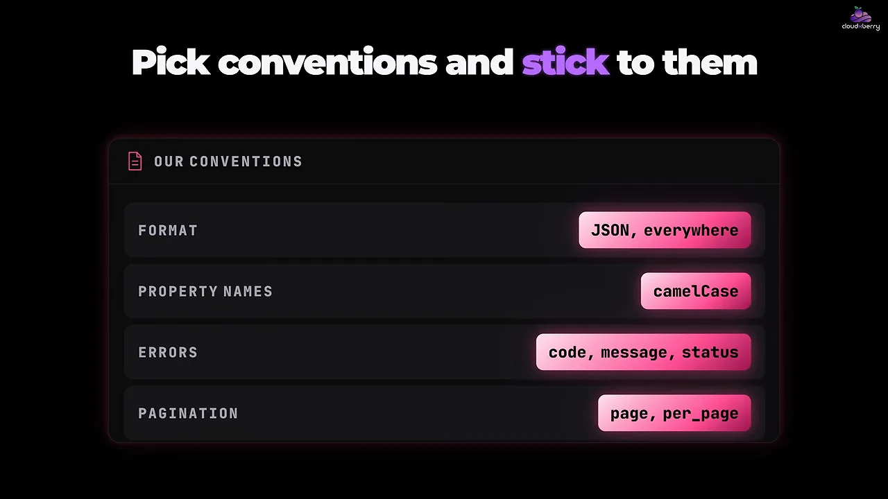
목표는 거대한 규칙집이 아니라고 해요. 다음 엔드포인트가 익숙해 보이게 만드는 거예요. 영상은 GET /v2/users?page=2&per_page=50 하나를 익힌 개발자가 다른 엔드포인트도 짐작할 수 있어야 한다고 말해요.
Consistency is one of the best features an API can have.
일관성은 API가 가질 수 있는 가장 좋은 기능 가운데 하나예요.
— 영상 07:45
REST를 지키는 것보다 중요한 것
마지막으로 영상은 기준을 하나 더 세워요. API가 기술적으로 REST(Representational State Transfer)를 따르는지도 쓸모 있지만, 가장 중요한 목표는 아니에요. GET, POST, PUT, DELETE를 쓴다고 저절로 좋은 API가 되진 않아요. 좋은 API는 클라이언트가 문서를 계속 확인하지 않아도 이해할 수 있는 API예요.
아래 화면은 그 조건을 여섯 기둥으로 보여 줘요. 왼쪽부터 리소스 이름은 말이 되고, 메서드는 예측대로 동작하고, 상태 코드는 뜻이 있고, 오류는 한 가지 구조를 갖고, 필터는 어디서나 같게 동작하고, 변경은 기존 클라이언트를 깨지 않아요.
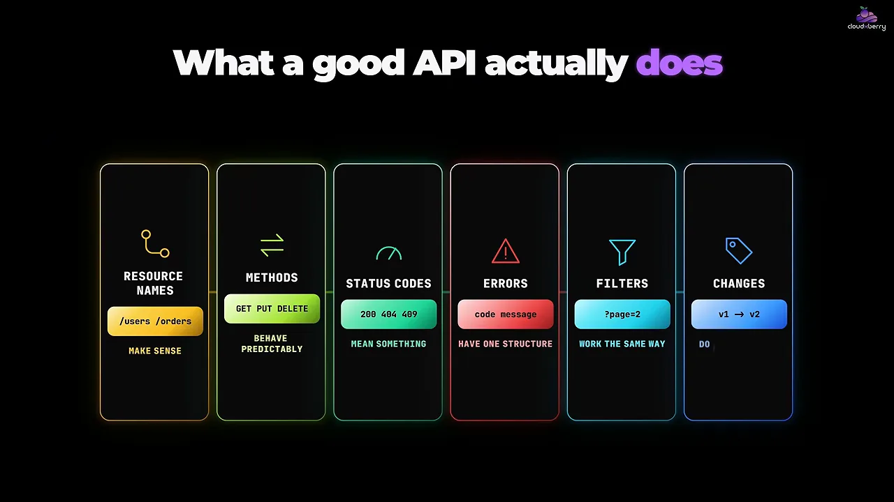
엔드포인트보다 패턴을 먼저
그래서 다음 REST API는 엔드포인트를 하나씩 만드는 데서 시작하지 말라고 해요. 패턴부터 정하라는 거예요. 아래 화면의 여덟 카드가 먼저 답할 질문이에요.
- 리소스 이름은 어떻게 지을까요?
- 컬렉션은 어떻게 표현할까요?
- 필터링은 어떻게 동작할까요?
- 어떤 HTTP 메서드를 쓸까요?
- 오류는 어떤 모양일까요?
- 상태 코드는 어떻게 다룰까요?
- API는 어떻게 진화할까요?
- 모든 엔드포인트가 따를 규칙은 무엇일까요?
규칙이 정해지면 API를 만드는 일이 훨씬 쉬워져요. 마지막 화면은 그렇게 만든 응답 하나를 보여 줘요. /v2/products/2048의 응답(id, price.amount, createdAt)에서 오른쪽으로 PUT /v2/products/2048, ?fields=price, ?since=2026-09-01이 자연스럽게 이어져요. 아래 띠에는 'THE RIGHT WAY TO USE IT IS OBVIOUS'라고 적혀 있어요.
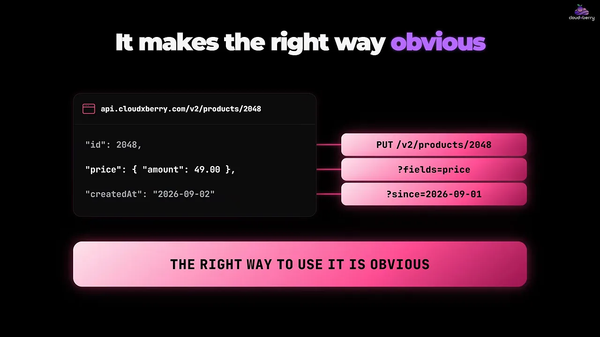
A good REST API doesn't just return the right data. It makes the right way to use it obvious.
좋은 REST API는 올바른 데이터를 돌려주는 데서 끝나지 않아요. 올바르게 쓰는 방법을 분명하게 보여 줘요.
— 영상 08:51